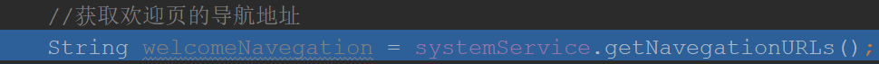

原文连接:https://www.cnblogs.com/top-housekeeper/p/11865399.html
背景理解
什么是缓存，为什么要用缓存
程序运行中，在内存保持一定时间不变的数据就是缓存。简单到写一个Map，里面放着一些key,value数据，就已经是个缓存了
所以缓存并不是什么高大上的技术，只是个概念，把要多次使用的东西存在一个变量里，时不时取出来使用，就达到了缓存的目的，缓存就是存放数据的容器
那为什么要用缓存呢，是因为要多次使用。一个程序总有一些数据时可预见被多次使用（预见的准不准就是常说的命中率）
比如一个复杂的计算结果，一次数据库访问取得的数据等耗时耗资源的数据就能放入缓存，目的就是为了节省开销，我们要用有限的资源（CPU，内存，带宽等等）尽量做最多的事情。
为什么要用SpringCache（缓存的演变过程）
缓存的思考
如果我们要设计一个缓存，最基本的功能是存和取：
1.能在缓存里存放数据
2.能在缓存里取出数据
可是这不够呀，比如以下的思考
1.取数据时判断，数据是否存在，如果不存在是不是要数据库取
2.如果是过期的内容是不是要更新
3.如果我有多个缓存，一个是我自己设计的HashMap缓存，一个是名声很大的redis，还有....，那需要个缓存管理器呀
为了让缓存更好用，更“智能”，越来越多的需求就会被提出来，而缓存就是这样一步步演变直到SpringCache横空出世，功能十分强大（说白了就是我们少写很多代码）
SpringCache的好处
SpringCache包含两个顶级接口，Cache（缓存）和CacheManager（缓存管理器），顾名思义，用CacheManager去管理一堆Cache。
最最关键的地方：抱紧了Spring的大腿，可以使用注解就能完成数据进入缓存！！
给大家举个例子，就知道多简单了
首先，Springboot中会自动加载一个CacheManager（它有默认的实现类），所以只要写好一个自定义的Cache即可（如果想用系统定义好的或者第三方如RedisCache也行，记得向Spring注册这个bean即可）
@Component
public class MyCache implements Cache {
/*
实现接口方法，一些关于数据set和get的方法
CacheManager是根据Cache的名字进行管理的
所以假设这个Cache名为MyCache
*/
}
然后在得出数据的方法上写上注释即可
@Cacheable(value = "MyCache",key = "#id")
public String getNavegationURLs(String id) {
//一个获取数据的方法
}
这样就会在调用这个方法时，会以id为key值，在名为MyCache的Cache容器中查找（注解中value就是缓存名字，不同名字指定使用不同的缓存）
如果没查到，则执行方法 getNavegationURLs，将返回值存入缓存
如果找到了，就直接将从缓存取值，直接返回，不用执行方法 getNavegationURLs
还有其他方便的Cache注解自行百度，重要的是我们根本不用写任何关于调用缓存的逻辑代码，只用关注于缓存自身的逻辑
注解如何起作用的，源码流程大致了解
为什么要了解源码
最直接的原因是因为SpringCache是不支持灵活的缓存时间设置的，所以想了解大概的来龙去脉去实现一个支持缓存过期时间设置和自动更新的类（之后会写实现博文）。
高大上的原因是想通过这次探索，去了解下Spring对类的管理机制，去接触下AOP的实现
SpringCache源码简单分析
大家从上面例子有没发现问题，Cache和CacheManager是怎样做关联的，其实是Spring扫包实现的
凡是继承了Cache接口的类，都会被自动注入进CacheManager中，最终存储于CacheManager的实现类中
接着会生成被@Cacheable（或者其他SpringCache注解修饰过）的代理类，并会将管理它的CacheManager赋值进去
看这段代码，就知道如果要设置多个CacheManager，就得在众多实现类的其中一个加上@Primary，不然会Spring会报错能选择的Bean太多而不知道用哪个
代理类生成后（包括会根据不同的注解生成信息类CacheOperationMetadata，到时候就会根据这个类的内容进行缓存操作，说白了就是调用我们实现Cache里面的各种方法）
Springboot底层初始化完成后，进入我们写的代码逻辑
如果这时进入了该类的方法，如：

代码跟进去，你会神奇的发现进入了代理类的intercept方法，怎么进去的呢~（具体原理看下面3.0）
这里面就会根据注解类型，进行缓存的逻辑判断，然后决定会不会调用我们写的方法~
代理类原理介绍（AOP切面之类的都是通过代理哦）
Spring代理分为两种：
1.JDK原生动态代理，要求被代理的类需要实现接口（通过接口来实现的代理）
那么代理类满足以下条件：

具体内容可以参考这篇精品博客：https://www.cnblogs.com/CarpenterLee/p/8241042.html
如果你想自己实现代理类（就是不喜欢用工具包），其实也行啊，输出符合class规范的二进制字节码就行啦~~~（认真学习JVM规范吧）
至此，该分享的就分享完啦，有什么问题欢迎留言一起探讨~